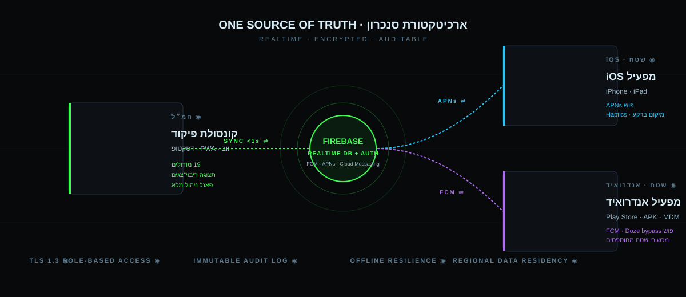
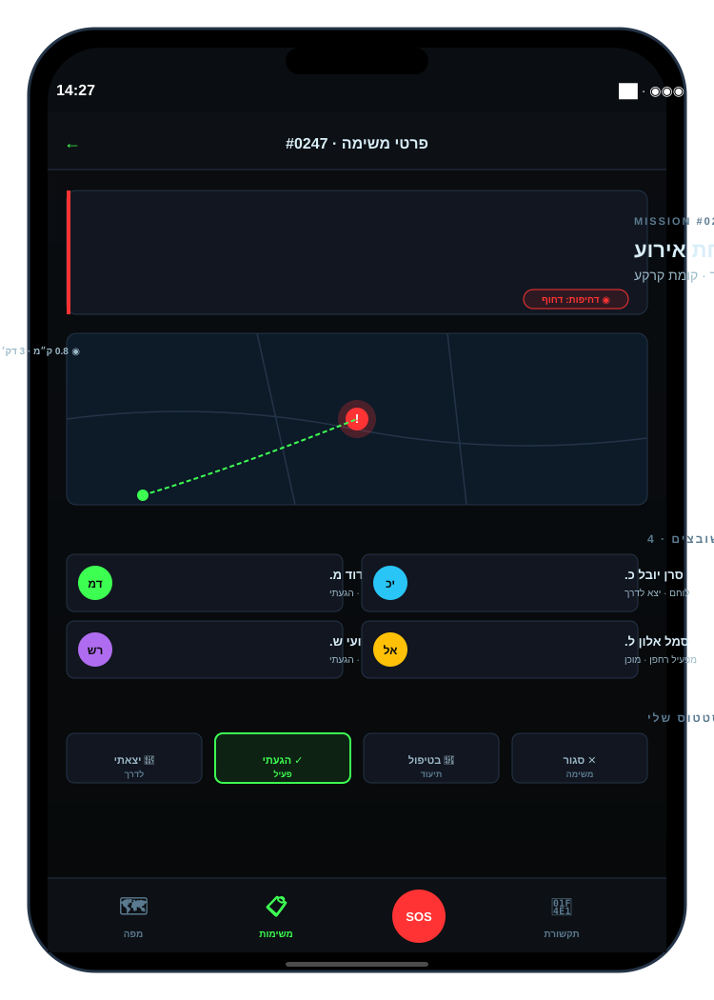
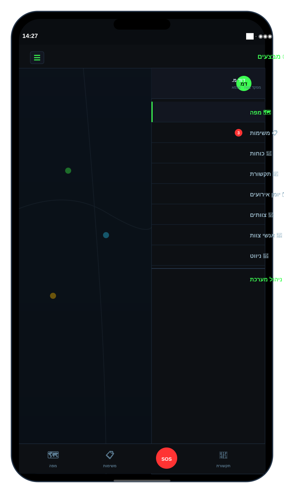
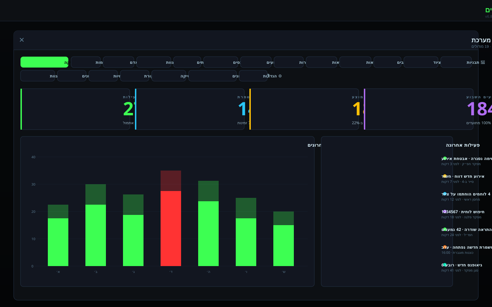
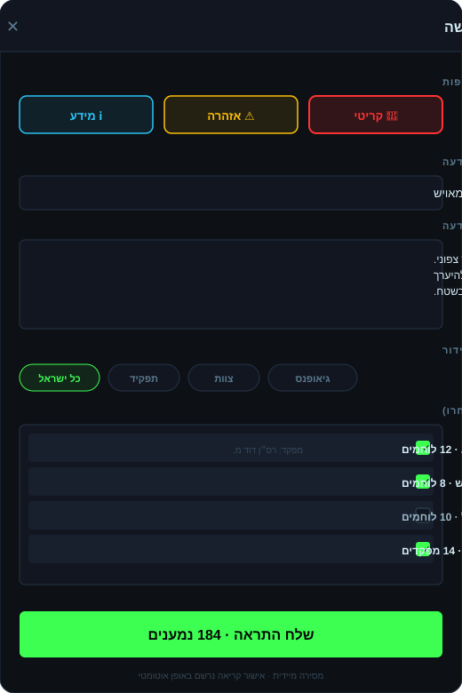
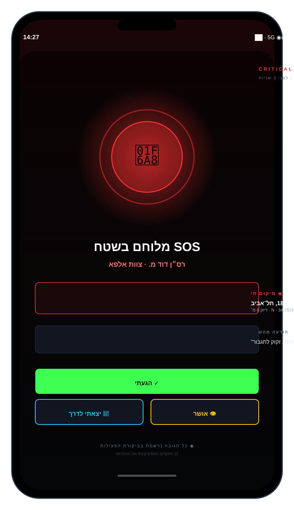

What's in this document. Every section is paired with a true-to-scale screen mockup or dataflow illustration. Icons match the live app. Use this guide next to your device.
ILLUSTRATED MANUAL · TCC EN v2PAGE 02
OVERVIEW// SECTION 0103 / 16
01 — System Introduction
Tactical Command Center (TCC) is a unified real-time operations platform — map, missions, forces, comms and admin, in one interface across desktop, phone and tablet. Built for emergency response, security and field-command teams.
3
Platforms
19
Admin Modules
<1s
Cross-device sync
CORE CAPABILITIES
🗺️Live Map
📋Missions
👥Forces
📡Comms
🗂️Incidents
🏢Teams
👤Personnel
🧭Navigation
🎒Warehouse
⬡Geofences
🔐Permissions
📜Audit
🚗Plates
🕐Shifts
🔑Credentials
📝Templates
📊Analytics
📋Training
RealtimeFirebase backedAPNs / FCM pushCross-deviceBuilt-in SOS
ILLUSTRATED MANUAL · TCC EN v2PAGE 03
ARCHITECTURE// SECTION 0204 / 16
02 — Architecture & Data Flow
Every platform shares a single source of truth — Firebase Realtime Database. Changes sync in under a second across desktop, iOS and Android. Push alerts flow through APNs (iOS) and FCM (Android).

DATAFLOWONE SOURCE OF TRUTH · ENCRYPTED IN TRANSIT
Three Platforms · One Codebase
🖥️
Web · PWA
Command Console · Desktop
Full 19-module backoffice
Multi-monitor friendly
Instant browser deploy
📱
iOS · Native
Field Operator · iPhone/iPad
Always-on APNs
Background location + Haptics
Wide sidebar on iPad
🤖
Android · Native
Field Operator · Play/APK
FCM with Doze bypass
Persistent background service
Rugged-device friendly
ILLUSTRATED MANUAL · TCC EN v2PAGE 04
INSTALLATION// SECTION 0305 / 16
03 — Installing on Every Platform
Secure Login Screen
On first launch the login screen appears. Enter the email and password provided by your commander. Tapping "Sign in" authenticates with Firebase, registers the device, and reveals the main map view.
1Email: as defined in Backoffice → Credentials.
2Password: initial — force-rotate on first use if needed.
Mission cards update in real time. A colored stripe on the card edge encodes urgency: red=critical · yellow=high · blue=medium · green=routine.
ILLUSTRATED MANUAL · TCC EN v2PAGE 06
MISSION WORKFLOW// SECTION 0507 / 16
05 — Mission Workflow (Field User)
Active mission screen
When assigned to a mission you receive a push alert. Opening it shows a full card: address, mini-map with route, assigned forces and four main status buttons.
Field steps
1Incoming alert — open the card.
2Tap "En route" — location starts broadcasting.
3On arrival: "Arrived" — command sees you on scene.
4During: "In progress" — attach photos, voice, notes.
5At end: "Close mission" with a summary.

MOBILE · MISSION DETAILiOS / ANDROID
Media & timeline. Every photo, voice memo or note you attach syncs immediately to the mission timeline in the command console — commanders see progress live.
ILLUSTRATED MANUAL · TCC EN v2PAGE 07
MOBILE NAVIGATION// SECTION 0608 / 16
06 — Mobile Drawer & Navigation

MOBILE DRAWERHAMBURGER MENU
Eight main views
Tapping ☰ (hamburger) opens the side drawer with eight views. At the bottom: three persistent shortcuts and a large, always-visible SOS button.
🗺️ Map📋 Missions👥 Forces📡 Comms🗂️ Log🏢 Teams👤 People🧭 Nav
Admins only: a final item appears at the bottom — ⚙ Admin — opening the Backoffice panel (Section 07).
ILLUSTRATED MANUAL · TCC EN v2PAGE 08
BACKOFFICE · OVERVIEW// SECTION 0709 / 16
07 — Backoffice · Admin Overview

BACKOFFICE · OVERVIEW19 MODULES · LIVE ANALYTICS
Admins enter the Backoffice via the ⚙ Manage button in the topbar. 19 modules cover the full command lifecycle — from personnel to audit. "Overview & Analytics" is the landing tab.
📊
Overview
DASHBOARD
📋
Missions
MISSIONS
👥
Manpower
UNITS
👤
Personnel
PERSONNEL
🏢
Teams
TEAMS
⬡
Geofences
GEOFENCES
🗂️
Incidents
INCIDENTS
🕐
Shifts
SHIFTS
🔐
Permissions
PERMISSIONS
🔑
Credentials
CREDENTIALS
🚗
Vehicles
VEHICLES
🎒
Warehouse
WAREHOUSE
📝
Templates
TEMPLATES
💬
Chat
CHAT
🔐
Sessions
SESSIONS
🚗
Plates
PLATES
📜
Audit
AUDIT
📊
Stats
STATS
📋
Training
TRAINING
ILLUSTRATED MANUAL · TCC EN v2PAGE 09
ROLES · PERMISSIONS · SHIFTS// SECTION 0810 / 16
08 — Roles · Permissions · Shifts
Role hierarchy (14 predefined roles)
Senior Command
Unit Commander
Deputy Unit Commander
District HQ Commander
Team Command
Platoon Commander / Deputy
Team Commander / Deputy
HQ Team / Deputy
Operators
Fighter
HQ Team Member
HQ Staff
Drone Operator / Observer
Least-privilege principle. New roles receive view-only by default. Grant edit rights intentionally on a "need-to-act" basis.
Predefined shifts
Routine AlertHeightened AlertEmergency AlertHoliday AlertNight Knight BNight Knight C
The system flags overlapping assignments in red. Activating "Emergency Alert" mobilizes every operator — a critical push notification is dispatched to everyone.
Adding a new operator
Personnel tab → + Add Person.
Fill name, phone, rank, role and team.
Select skills and certifications (drone, motorcycle, recon, etc.).
Save → an onboarding SMS with credentials is sent automatically.
ILLUSTRATED MANUAL · TCC EN v2PAGE 10
BROADCAST ALERTS// SECTION 0911 / 16
09 — Broadcast Alerts & Push
Compose alert screen
Tap the 🔔 bell in the topbar to open the alert composer. Select:
1Urgency: Info (blue) · Warning (yellow) · Critical (red).
2Title + body: free text, body 1–160 characters.
3Target: All · Role · Team · Geofence.
4Recipients: fine-grained selection.
5Send — instant delivery, auto read-receipts.
Critical — use sparingly. A Critical alert takes over every device with sound and animation, even if locked. Reserved for genuinely life-safety events.

BROADCASTCOMPOSE ALERT
ILLUSTRATED MANUAL · TCC EN v2PAGE 11
EMERGENCY · SOS// SECTION 1012 / 16
10 — Emergency · SOS Protocol

SOS CRITICAL ALERTFULL-SCREEN RECEIVE
What happens on SOS?
Press and hold the red SOS button (bottom of screen) for 2 seconds.
A confirmation ring rotates — release to send.
Live location, identity, role and team are broadcast to every commander.
Recipients see the full-screen alert (shown right) with three response options.
Response options
✓ Arrived🚗 On my way👁 Acknowledged
Training vs. live. For drills — use Training mode. Never test on a live system; every alert is audit-logged.
Quick Emergency Mode
A short-form SOS — pick event type (terrorist intrusion, mortar/drone fire, casualties) and one tap broadcasts with the type pre-filled.
ILLUSTRATED MANUAL · TCC EN v2PAGE 12
EQUIPMENT · GEOFENCE · AUDIT// SECTION 1113 / 16
11 — Equipment · Geofences · Audit
🎒 Equipment Warehouse
Item management
Import CSV for initial inventory rollout.
Manual add with barcode/SKU and custom model.
Check-out to operator → recorded under their profile.
Return to warehouse at shift end.
Export CSV for procurement & audit.
Item status
AvailableChecked-outIn maintenanceMissing / Lost
Every item has a full chain — who took it, when, where, and when returned. Click an item to see the timeline.
⬡ Geofences
Draw a polygon directly on the map using "Boundary draw tool". Save with a name, color and whether crossing it triggers an alert. Common uses:
Every privileged action is immutably logged — mission edits, permission grants, session closures, plate searches. The Plates tab is compliance-grade: each search shows operator identity, timestamp, reason and result.
Regulator export. One click exports the audit log to a time-signed CSV for regulator or investigation purposes.
ILLUSTRATED MANUAL · TCC EN v2PAGE 13
SUPPORT & TROUBLESHOOTING// SECTION 1214 / 16
12 — Troubleshooting & Support
Symptom
Likely cause
Resolution
No push notifications
Permission denied · expired token
Settings → Notifications → allow. "Refresh push" in Comms.
Blank map
Weak signal
Switch to Streets layer (lightest). Cached tiles still work.
Stuck location
Background location off
iOS: "Always Allow". Android: disable battery optimization for TCC.
Cannot sign in
Account disabled · password rotated
Contact admin → Credentials tab to reset.
Hidden SOS
Wrong screen
Return to Map — SOS is always visible there.
iOS launch crash
Background-mode conflict
Fixed in v6.8.42+. Update to v6.8.44.
Two entities same name
Duplicate shift assignment
Backoffice → "Shifts" flags overlaps in red.
Primary Support
Or Many — System Creator
📞 +972-50-340-4444
Available for onboarding, training and enterprise support.
Versioning
Current version: v6.8.44 — always shown in the topbar.
Web — auto-update · iOS — App Store/TestFlight · Android — Play Store/MDM.